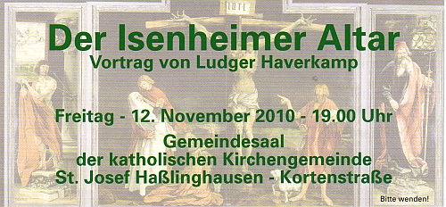
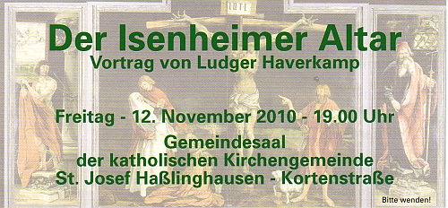
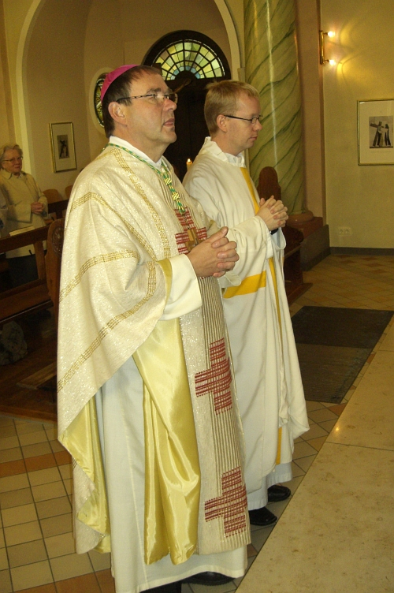
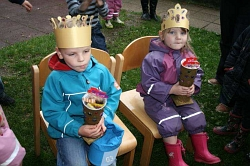
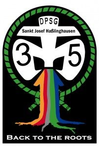
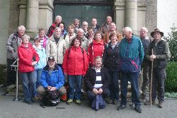
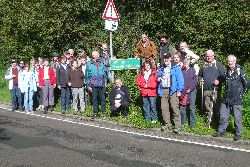
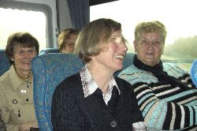
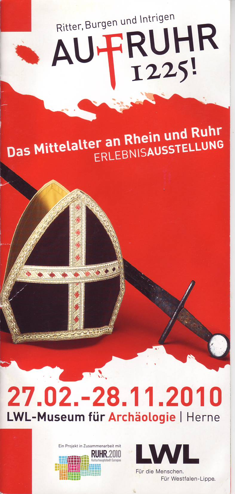
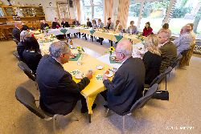

Vortragsabend über den Isenheimer Altar

Die Seniorengemeinschaft der St. Josef Gemeinde Haßlinghausen hatte am Freitag, dem 12. November 2010, um 19.00 Uhr zu dem Vortrag über den Isenheimer Altar des Matthias Grünewald eingeladen.

Die Seniorengemeinschaft der St. Josef Gemeinde Haßlinghausen hatte am Freitag, dem 12. November 2010, um 19.00 Uhr zu dem Vortrag über den Isenheimer Altar des Matthias Grünewald eingeladen.
Seine Visitationsreise durch die Pfarrei St. Peter und Paul hat Weihbischof Ludger Schepers am 29. September 2010 mit der Feier einer Hl. Messe in unserer Kirche St. Josef in Haßlinghausen begonnen.
|  | |
| Weihbischof Ludger Schepers und Pastor Burkhard Schmelz (v. links) |
| Anlässlich der Visitation unserer Gemeinde St. Josef wird Weihbischof Ludger Schepers am Mittwoch, den 29.09.2010 um 8.30 Uhr in unserer Kirche eine Hl. Messe feiern. Sie sind als Mitglied unserer Gemeinde herzlich eingeladen, diesen Gottesdienst mit zu feiern und nach der Hl. Messe noch einige Worte mit dem Bischof zu wechseln. Be 23.09.2010 |
|
|
Bischof Schepers |
Annabell und Tim sind Königspaar 2010.
|  | Das Wetter war einer Krönung am vorgesehenen Freitag nicht würdig. Deshalb musste die Krönung auf den drauf folgenden Dienstag verschoben werden.
Am 28. September 2010 versammelte sich das Volk, um dem neuen Königspaar zuzujubeln. Annabell und Tim übernahmen stolz für ein Jahr dieses Amt. Hoch lebe das 10. Königspaar! Hoch! Hoch! |
| Königspaar 2010: Annabell und Tim |
Zum Originalbericht (PDF-Datei) mit Bildern über das Kartoffelfest 2010
|  |
DPSG-Stamm St. Josef – Haßlinghausen feiert am 02.10.2010
sein 35-jähriges Jubiläum.
Aus Anlass seines 35-jährigen Bestehens lädt der Stamm St. Josef – Haßlinghausen zu einer Festveranstaltung ein.
Sie beginnt am Samstag, den 02. Oktober 2010 um 17:00 Uhr mit einem feierlichen Gottesdienst in unserer Gemeindekirche St. Josef.
Hiernach versammelt sich die Festgemeinde zu einem Empfang mit anschließendem Programm im Gemeindesaal.
Erinnerungsfotos vom 30-jährigen Jubiläum vor fünf Jahren finden Sie hier.
Be 28.09.2010
Pünktlich um 9.00 Uhr hielten die Pilger ihre erste Statio in unserer Kirche St. Josef, bevor sie sich auf den gut 20 Kilometer langen Fußweg zum Mariendom nach Velbert-Neviges machten.
Das Gruppenfoto vor der Kirche zeigt die 22 wohl gerüsteten „Josefianer“, zu denen unterwegs noch vier weitere Pilger aus St. Josef hinzu stießen.
|  |  |
| Die 22-köpfige Startgruppe | Gruppe St. Josef an der Gemeinde- und Bistumsgrenze |
Unsere traditionelle Wallfahrt nach Neviges wird in diesem Jahr am Samstag, den 18.09.2010 stattfinden.
Nach einer Statio um 9.00 Uhr in unserer Kirche St. Josef wird sich die Pilgergruppe auf den Fußweg nach Neviges begeben.
Gegen 11.15 Uhr haben Sie, falls Sie nicht den ganzen Weg gehen können, Gelegenheit, beim Parkplatz an der Felderbachstraße (zwischen den Straßen „Zur Fahrentrappe“ und „Marker Weg“ – Nähe Reiterhof Gut Kiekert) zur Pilgergruppe hinzuzustoßen.
Um ca. 13.00 Uhr treffen sich die Pilger aus St. Januarius und St. Josef an der „Tente“, „Nordrather Str.“ 151, um von hier aus gemeinsam über die Windrather Kirche (Statio) und den Nevigeser Marienberg (Statio) zum Mariendom in Velbert-Neviges zu gelangen.
Den Abschluss dieser Wallfahrt bildet die Feier der Hl. Messe, die die Kirchenchöre der Gemeinden St. Januarius und St. Josef musikalisch gestalten.
Eindrücke vom vergangenen Jahr finden Sie weiter unten und in unserem Fotoalbum.
Be 12.09.2010
|  | 13 Frauen des Frauenkreises und sechs Gäste unternahmen am 04.09.2010 eine Fahrt nach Koblenz und zum Kloster Arenberg. |
| Wohlgelaunt ist man schon bei der Reise |
| Nach der am 29.04.2010 erfolgreich durchgeführten Exkursion zur Ausstellung „AufRuhr“ im Rahmen der Kulturhauptstadt Europas „Ruhr2010“ sind unsere Senioren am 01.09.2010 zu einem Ausflug ins Münsterland aufgebrochen. Nachfolgend lesen Sie den Bericht. |  |
|  | Der Bischof zeigte sich erstaunt über die Schönheit unserer Region, die er in der weitläufigen Pfarrei bei seiner Besichtigung erstmals bereiste. Ein sehr offener Meinungsaustausch, bei dem auch kritische Aspekte deutlich angesprochen wurden, hinterließ bei den Teilnehmerinnen und Teilnehmern einen positiven Eindruck dieser einmaligen Begegnung. |
|
Beim Empfang mit dem KV und PGR |
Von allen 43 Essener Pfarreien, die der Bischof im ersten Jahr seiner Amtszeit besuchen möchte, hatte er mit dem Besuch bei uns bereits die Hälfte kennen gelernt.
{kind=link}
{kind=link}
{kind=link}
{kind=link}
{kind=link}
{kind=link}
{kind=link}